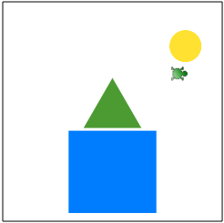

В KTurtle нет команды, которая позволяла бы заливать замкнутую область, т.е. "рисовать" фигуру с заливкой. Чтобы все-таки получить такую фигуру можно придумать различные хитрости.
Если сильно увеличить толщину пера и задать спрайту движение вперед или назад, то легко можно получить прямоугольник или квадрат. Иные, "залитые" таким образом, фигуры получить намного сложнее.
Один из способов - это "нарисовать" прямоугольник, затем "зарисовать" лишние части белыми линиями.
Так, например, в примере ниже залитый треугольник получается следующим образом:
Аналогично треугольнику создается круг. Только здесь вместо треугольников, рисуются увеличивающиеся белые окружности.
Проблема в том, что таким образом нельзя создать две близко расположенные фигуры. Белые "рамки" будут замазывать предыдущую.
сброс направление 90 иди 175, 185 толщина_пера 100 цвет_пера 75,155,50 вперёд 50 цвет_пера 255,255,255 толщина_пера 20 $x = 130 $y = 240 $l = 140 повтори 5 { иди $x, $y повтори 3 { вперёд $l налево 120 } $x = $x - 20 $y = $y + 10 $l = $l + 40 } иди 195,310 толщина_пера 150 цвет_пера 0,125,255 вперёд 10 иди 325,75 толщина_пера 75 цвет_пера 255,225,50 вперёд 10 цвет_пера 255,255,255 толщина_пера 10 $x = 330 $y = 115 $l = 6 повтори 5 { иди $x, $y повтори 36 { вперёд $l налево 10 } $x = $x - 2 $y = $y + 4 $l = $l + 1 }
| Прикрепленный файл | Размер |
|---|---|
| filling.turtle | 691 байт |